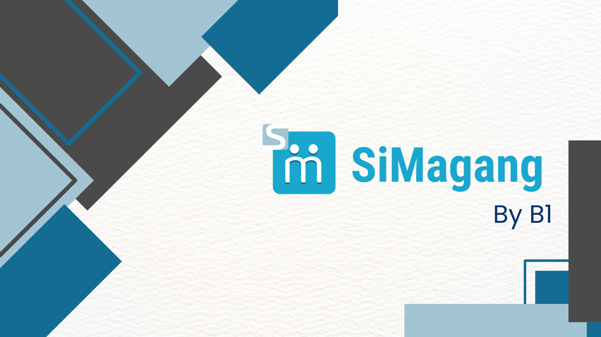
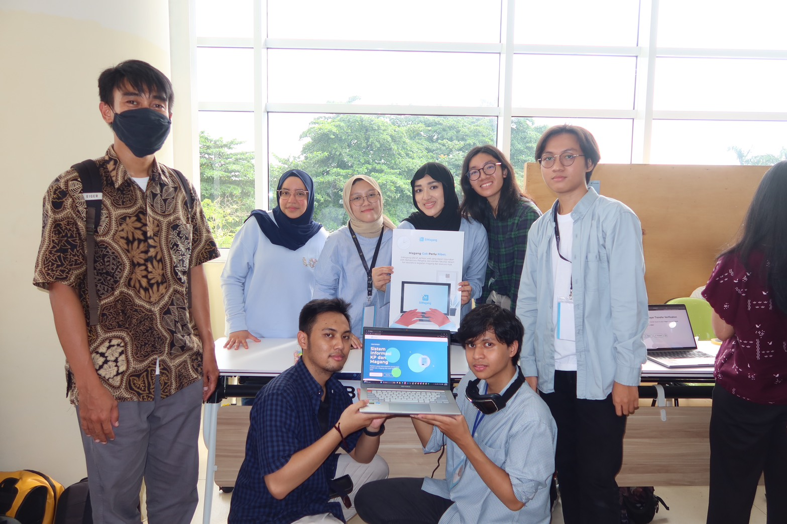

Static screenshot of a Power BI dashboard.
This was a course project that I did in my seventh semester. It was a single
project that were done in an SDLC starting from planning to deployment. It was
considered big for a course project scale because we were working with an
actual client, but not with a real project. But who knows if the final product
was actually sufficient and satisfy all clients request, maybe if the resource
is good the project can be actually continued.
For this project, my team were given a task to create a web app for all matters
regarding internship for student in Fasilkom UI. From lecturer's approval to
credit transfer. There were lots of backlogs. Many use cases to cover. Therefore
each member of the team were working as a fullstack dev. With Python Django as
the backend and HTML and Tailwind CSS for front page.
Diving into details, from this project I did a bit of designing using Figma.
I also learnt about product documentations such as Product Requirement Document,
System Design Specification, and backlogs. In technical side, I learned more
about dockerization. We were using Docker container for app execution as well as
database. We were working in a Test-Driven Development, but limited to unit tests
because our backlogs didn't really gave any of us time to explore more on QA testings.

In this project, we were working in an iterative Agile Scrum environment. In a group
of 7, we were working with three roles which are developers, product owner, and scrum
master. The developer role is a must. So for each Agile iterative, we take turns for
the product owner and scrum master role. Therefore everyone in the team experienced
double role-ing. After each of the Agile period, which each of it last for 2 weeks,
we do retro session. We talked about previous mistakes and what we did nicely and
what we would like to fix and do in the next iterative, preparing our team coordination
to reach healthy and efficient working environment.
It was a fun experience. The team members were compositioned from the beginning, either
randomly or not student doesn't know. All we know is that we're arranged as a
team completely outside of our choice. That's why I met with new people. New and
fun people, making the journey in finishing this project not only thrilling,
but also fun and memorable.